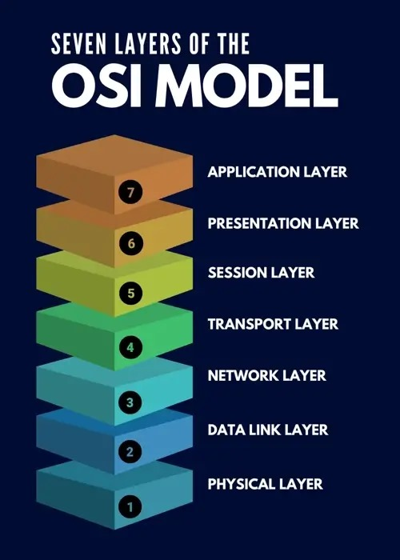

What is OSI Model? 🌐
The OSI (Open Systems Interconnection) model is a conceptual framework that standardizes the functions of a communication system or a network into seven abstraction layers. Each layer is designed to perform specific tasks and interact with the layers adjacent to it. The model was developed by the International Organization for Standardization (ISO) to provide a common reference for understanding and designing network architectures. Here's an overview of the seven layers:
Seven Layers of OSI Model? 🌐
Physical Layer: Concerned with the physical connection between devices. Deals with hardware elements like cables, switches, and network interface cards. Defines characteristics such as voltage levels, data rates, and physical connectors.
Data Link Layer: Responsible for creating a reliable link between two directly connected nodes. Divided into two sublayers: Logical Link Control (LLC) and Media Access Control (MAC). LLC manages flow control and error checking, while MAC deals with access to the physical network medium.
Network Layer: Manages the routing of data packets between different networks. Responsible for logical addressing, such as IP addresses. Routers operate at this layer, making decisions on the most efficient path for data to travel.
Transport Layer: Ensures end-to-end communication, providing error detection and correction. Manages flow control and data segmentation. Examples include TCP (Transmission Control Protocol) and UDP (User Datagram Protocol).
Session Layer: Establishes, maintains, and terminates communication sessions. Handles dialog control, allowing communication to be organized into manageable chunks.
Presentation Layer: Responsible for data translation, encryption, and compression. Ensures that data is presented in a readable format for the application layer.
Application Layer: The topmost layer that interacts directly with end-user applications. Provides network services such as email, file transfer, and remote file access.
Simulation of OSI Model? 🌐
Senders
Application Layer: Initially, the input string is "abcdefgh." To meet the minimum length of 8, no changes are needed at the application layer
Input at Application Layer: "abcdefgh"
Presentation Layer: No changes are needed at this layer since the length is already 8.
Output from Presentation Layer: "abcdefgh"
Session Layer: Segment the string into lengths of 4 as per the original scenario.
Output from Session Layer: "abcd" and "efgh"
Transport Layer: Perform framing, but now the segments are already of length 4.
Output from Transport Layer: "ab" "cd" "ef" "gh
Network Layer: Encapsulate the data into frames. Since the length of each segment is already 4, no additional changes are needed.
Output from Network Layer: "a" "b" "c" "d" "e" "f" "g" "h"
Data Link Layer: Add header and trailer to each frame. Since the length is 4, the frames remain unchanged.
Output from Data Link Layer: "xay" "xby" "xcy" "xdy" "xey" "xfy" "xgy" "xhy"
Receivers
Data Link Layer at Receiver: Remove the header and trailer from each frame.
Input to Data Link Layer at Receiver: "xay" "xby" "xcy" "xdy" "xey" "xfy" "xgy" "xhy"
Output from Data Link Layer at Receiver: "a" "b" "c" "d" "e" "f" "g" "h"
Network Layer at Receiver:Changes are made here.
Output from Network Layer at Receiver: "ab" "cd" "ef" "gh"
Transport Layer at Receiver: Changes are made here.
Output from Transport Layer at Receiver: "abcd" "efgh"
Session Layer at Receiver: Reassemble the segments.
Output from Session Layer at Receiver: "abcd" and "efgh"
Presentation Layer at Receiver: No changes are needed here.
Output from Presentation Layer at Receiver: "abcdefgh"
Application Layer at Receiver: The final processed string remains "abcdefgh."